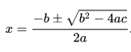

This atom summarizes and reviews the atoms from Objects Everywhere through Property Accessors.
If you’re an experienced programmer, this is your next atom after Summary 1.
Beginning programmers should read this atom and perform the exercises as review. If any information here isn’t clear to you, go back and study the atom for that particular topic.
The topics appear in appropriate order for experienced programmers, which is not the same as the order of the atoms in the book. For example, we start by introducing packages and imports so we can use our minimal test framework for the rest of the atom.
Any number of reusable library components can be bundled under a single library name using the package keyword:
// Summary2/ALibrary.kt
package com.yoururl.libraryname
// Components to reuse ...
fun f() = "result"You can put multiple components in a single file, or spread components out among multiple files under the same package name. Here we’ve defined f() as the sole component.
To make it unique, the package name conventionally begins with your reversed domain name. In this example, the domain name is yoururl.com.
In Kotlin, the package name can be independent from the directory where its contents are located. Java requires that the directory structure correspond to the fully-qualified package name: in Java, all the content for the package com.yoururl.libraryname should be located under the com/yoururl/libraryname directory. For mixed Kotlin and Java projects, Kotlin’s style guide recommends the same practice. For pure Kotlin projects, put the directory libraryname at the top level of your project’s directory structure.
An import statement brings one or more names into the current namespace:
// Summary2/UseALibrary.kt
import com.yoururl.libraryname.*
fun main(args: Array<String>) {
val x = f()
}The star after libraryname tells Kotlin to import all the components of a library. Now we can refer to f() without producing an error. You can also select components individually; details are in Imports & Packages.
An important library in this book is atomictest, our simple testing framework. Once it’s imported, you use eq (equals) and neq (not equals) almost as if they were language keywords:
// Summary2/UsingAtomicTest.kt
import atomictest.*
fun main(args: Array<String>) {
val pi = 3.14
val pie = "A round dessert"
pi eq 3.14
pie eq "A round dessert"
pie neq "Square"
}The ability to use eq without any dots or parentheses is called infix notation. atomictest defines eq in a special way, marking it as infix, which makes it possible to call it either in the regular way: pi.eq(3.14), or using infix notation: pi eq 3.14. eq and neq are assertions of truth which also display the result from the left side of the eq statement, and an error message if the expression on the right of the eq doesn’t agree (or does agree, in the case of neq). This way you see verified results in the source code.
atomictest is defined in Appendix B: AtomicTest, although it uses language features you will not understand at this point in the book.
Kotlin is a hybrid object-functional language: it supports both object-oriented and functional programming paradigms.
Objects contain vals and vars to store data (these are called properties) and they perform operations using functions defined within a class, called member functions (when it’s unambiguous, we just say “functions”). A class defines properties and member functions for what is essentially a new, user-defined data type. When you create a val or var of a class, it’s called creating an object or sometimes creating an instance.
An especially useful type of object is the container or collection: an object that holds other objects. In this book, we primarily use the List because it’s the most general-purpose sequence. Here we perform several operations on a List that holds Doubles. listOf() creates a new List from its arguments:
// Summary2/ListCollection.kt
import atomictest.eq
fun main(args: Array<String>) {
val lst = listOf(19.2, 88.3, 22.1)
lst[1] eq 88.3 // Indexing
lst.reversed() eq listOf(22.1, 88.3, 19.2)
lst.sorted() eq listOf(19.2, 22.1, 88.3)
lst.max() eq 88.3
lst.min() eq 19.2
lst.sum() eq 129.6
}No import statement is required to use a List. Kotlin uses square brackets for indexing into sequences. Indexing is zero-based.
This example also shows some of the many standard library functions available for Lists: sorted(), reversed(), max(), min() and sum(). To understand these functions, use the online Kotlin documentation.
When you call sorted() or reversed(), the List lst is not modified. Instead, a new List is created and returned, containing the desired result. This approach of never modifying the original object is consistent throughout Kotlin libraries and you should endeavor to follow this pattern when possible.
A class definition consists of the class keyword, a name for the class, and an optional body. The body can contain function definitions and property definitions (vals and vars).
This example defines a class without a body, and classes with properties:
// Summary2/ClassBodies.kt
class NoBody
class SomeBody {
val name = "Janet Doe"
}
class EveryBody {
val all = listOf(SomeBody(),
SomeBody(), SomeBody())
}
fun main(args: Array<String>) {
val nb = NoBody()
val sb = SomeBody()
val eb = EveryBody()
}To create an instance of a class, put parentheses after its name, along with arguments if those are required.
Properties within class bodies can be any type. SomeBody contains a property of type String, and EveryBody’s property is a List holding SomeBody objects.
Here’s a class with member functions:
// Summary2/Temperature.kt
import atomictest.eq
class Temperature {
var current = 0.0
var scale = "f"
fun setFahrenheit(now: Double) {
current = now
scale = "f"
}
fun setCelsius(now: Double) {
current = now
scale = "c"
}
fun getFahrenheit(): Double =
if (scale == "f")
current
else
current * 9.0 / 5.0 + 32.0
fun getCelsius(): Double =
if (scale == "c")
current
else
(current - 32.0) * 5.0 / 9.0
}
fun main(args: Array<String>) {
val temp = Temperature() // [1]
temp.setFahrenheit(98.6)
temp.getFahrenheit() eq 98.6
temp.getCelsius() eq 37.0
temp.setCelsius(100.0)
temp.getFahrenheit() eq 212.0
}These member functions are just like the top-level functions we’ve defined outside of classes, except they belong to the class and have unqualified access to the other members of the class—such as current and scale. Member functions can also call other member functions in the class without qualification.
temp is a val, but then we modify the Temperature object. The val definition prevents the reference temp from being reassigned to a new object; it does not restrict the behavior of the object itself.The following two classes are the foundation of a tic-tac-toe game:
// Summary2/TicTacToe.kt
import atomictest.eq
class Cell {
var entry = ' ' // [1]
fun set(e: Char): String = // [2]
if (entry == ' ' && (
e == 'X' || e == 'O')) {
entry = e
"successful move"
} else
"invalid move"
}
class Grid {
val cells = listOf(
listOf(Cell(), Cell(), Cell()),
listOf(Cell(), Cell(), Cell()),
listOf(Cell(), Cell(), Cell())
)
fun play(e: Char, x: Int, y: Int): String =
if (x < 0 || x > 2 || y < 0 || y > 2)
"invalid move"
else
cells[x][y].set(e) // [3]
}
fun main(args: Array<String>) {
val grid = Grid()
grid.play('X', 1, 1) eq "successful move"
grid.play('X', 1, 1) eq "invalid move"
grid.play('O', 1, 3) eq "invalid move"
}[1] The entry property in Cell is a var so it can be modified. The single quotes in the initialization produce a Char type, so all assignments to entry must also be Chars.
[2] set() tests that the Cell is available and that you’ve passed the right character; it returns a String result to indicate success or failure.
The Grid class holds a List containing three Lists, each containing three Cells—a matrix.
play() checks to see if the x and y indices are within range, then indexes into the matrix, relying on the tests performed by set().Constructors create new objects. You pass information to a constructor using its argument list, placed in parentheses directly after the class name. A constructor call thus looks like a function call, except that the initial letter of the “function” name is capitalized (assuming the class definition follows the Kotlin style guide) and the return value is an object of the constructor’s class:
// Summary2/WildAnimals.kt
import atomictest.eq
class Badger(id: String, years: Int) {
val name = id
val age = years
override fun toString(): String {
return "Badger: $name, age: $age"
}
}
class Snake(
var type: String,
var length: Double
) {
override fun toString(): String {
return "Snake: $type, length: $length"
}
}
class Moose(
val age: Int,
val height: Double
) {
override fun toString(): String {
return "Moose, age: $age, height: $height"
}
}
fun main(args: Array<String>) {
Badger("Bob", 11) eq "Badger: Bob, age: 11"
Snake("Garden", 2.4) eq
"Snake: Garden, length: 2.4"
Moose(16, 7.2) eq
"Moose, age: 16, height: 7.2"
}The arguments id and years in Badger are only available in the constructor body. The constructor body consists of the lines of code other than function definitions; in this case, it’s the definitions for name and age.
Often you want the constructor arguments to be available in parts of the class other than the constructor body, but to save yourself the trouble of explicitly defining new identifiers as we did with name and age. If you define your arguments as vars or vals in the argument list, they becomes properties and are accessible everywhere in the class. Both Snake and Moose use this approach, and you can see that the constructor arguments are now available inside their respective toString() functions.
Class arguments declared with val cannot be changed, but those declared with var can, as you expect.
Whenever you use an object in a situation that expects a String, Kotlin produces a String representation of that object by calling its toString() member function. To define a toString(), you must understand a new keyword: override. This is necessary (Kotlin insists on it) because toString() is already defined. override tells Kotlin that yes, we do actually want to replace the default toString() with our own definition. The explicitness of override makes this clear to the reader and helps prevent mistakes.
Notice the formatting of the multiline argument list for Snake and Moose—this is the recommended standard when you have too many arguments to fit on one line, for both constructors and functions.
Kotlin provides access modifiers similar to those available in other languages like C++ or Java. These allow component creators to decide what is available to the client programmer. Kotlin’s access levels include public, private, protected, and internal; the latter two are explained later in the book.
An access modifier like public or private appears before the definition for a class, function or property. Each access modifier only controls the access for that particular definition.
A public definition is available to everyone, in particular to the client programmer who uses that component. Thus, any changes to a public definition will impact client code.
If you don’t provide a modifier, your definition is automatically public. For clarity in certain cases, programmers still sometimes redundantly specify public.
Because a private definition is not available to everyone, you can generally change it without concern for the client programmer.
If you define a class, top-level function, or property as private, it is available only inside that same file:
// Summary2/Boxes.kt
private var count = 0 // [1]
private class Box(val dimension: Int) { // [2]
fun volume() =
dimension * dimension * dimension
override fun toString() =
"Box volume: ${volume()}"
}
private fun countBox(box: Box) { // [3]
println("$box")
count++
}
fun countBoxes() {
countBox(Box(4))
countBox(Box(5))
}
fun main(args: Array<String>) {
countBoxes()
println("$count boxes")
}
/* Output:
Box volume: 64
Box volume: 125
2 boxes
*/You can access private properties ([1]), classes ([2]), and functions ([3]) only from other functions and classes in the Boxes.kt file. Kotlin prevents you from accessing private top-level elements from another file, with a message about those being private within that file.
Class members can be private:
// Summary2/JetPack.kt
class JetPack(
private var fuel: Double // [1]
) {
private var warning = false
private fun burn() = // [2]
if (fuel - 1 <= 0) {
fuel = 0.0
warning = true
} else
fuel -= 1
public fun fly() = burn() // [3]
fun check() = // [4]
if (warning) // [5]
"Warning"
else
"OK"
}
fun main(args: Array<String>) {
val jetPack = JetPack(3.0)
while(jetPack.check() != "Warning") {
println(jetPack.check())
jetPack.fly()
}
println(jetPack.check())
}
/* Output:
OK
OK
OK
Warning
*/[1] fuel and warning are both private properties and can’t be used by non-members of JetPack.
[2] burn() is private, and thus only accessible inside JetPack.
[3] fly() and check() are public and can be used everywhere.
[4] No access modifier means public visibility.
[5] Only members of the same class can access private members.
With private, you can freely change that member without worrying whether it affects another class in the same package, or a client programmer. As a library designer, you’ll typically keep everything as private as possible, and expose only functions and classes you want client programmers to use. In this book, however, we will only use private in special cases, in order to minimize the size and complexity of example listings.
Any function you’re certain is only a helper function can be made private to ensure you don’t accidentally use it elsewhere in the package and thus prohibit yourself from changing or removing the function.
Consider toDouble(), which converts a String to a Double. What happens if you call it for a String that doesn’t translate into a Double?
Uncommenting the line in main() produces an exception. Here, the failing line is commented so we don’t stop the book’s build. The build checks whether each example compiles and runs as expected.
When an exception is thrown, the current path of execution stops, and the exception object ejects from the current context. When an exception isn’t caught, the program aborts and displays a stack trace containing detailed information.
To avoid displaying exceptions by commenting and uncommenting code, we use atomictest.capture(), which stores the exception and compares it to what we expect:
// Summary2/AtomicTestCapture.kt
import atomictest.*
fun main(args: Array<String>) {
capture {
"$1.9".toDouble()
} eq "NumberFormatException: " +
"""For input string: "$1.9""""
}capture() is designed specifically for this book, so that you can see the exception and know that the output has been checked by the book’s build system.
Another strategy when your function can’t successfully produce the expected result is to return null. Later in Nullable Types we’ll discuss how null affects the type of the resulting expression.
To throw an exception, use the throw keyword followed by the exception you want to throw, along with any arguments it might need. quadraticZeroes() in the following example solves the quadratic equation which defines a parabola:
ax2 + bx + c = 0
The solution is the quadratic formula:

Our example finds the zeroes of the parabola, where the lines cross the x-axis. There are two limitations for which we throw exceptions:
a cannot be zero.If zeroes exist, there are two of them, so we create the Roots class to hold the return values:
// Summary2/Quadratic.kt
import kotlin.math.sqrt
import atomictest.*
class Roots(
val root1: Double,
val root2: Double
)
fun quadraticZeroes(
a: Double,
b: Double,
c: Double
): Roots {
if (a == 0.0)
throw IllegalArgumentException(
"a is zero")
val underRadical = b * b - 4 * a * c
if (underRadical < 0)
throw IllegalArgumentException(
"underRadical is negative")
val squareRoot = sqrt(underRadical)
val root1 = (-b - squareRoot) / 2 * a
val root2 = (-b + squareRoot) / 2 * a
return Roots(root1, root2)
}
fun main(args: Array<String>) {
capture {
quadraticZeroes(0.0, 4.0, 5.0)
} eq "IllegalArgumentException: " +
"a is zero"
capture {
quadraticZeroes(3.0, 4.0, 5.0)
} eq "IllegalArgumentException: " +
"underRadical is negative"
val roots = quadraticZeroes(3.0, 8.0, 5.0)
roots.root1 eq -15.0
roots.root2 eq -9.0
}Here we use the standard exception class IllegalArgumentException. Later we’ll show you how to define your own exception types and to make them specific to your circumstances. Your goal is to generate the most detailed messages possible, to simplify the support of your application in the future.
Lists are Kotlin’s basic sequential container type, and are part of the standard Kotlin package so they’re available without any imports. You create an immutable list using listOf() and a mutable list using mutableListOf():
// Summary2/MustableVsImmutableList.kt
import atomictest.eq
fun main(args: Array<String>) {
val ints = listOf(99, 3, 5, 7, 11, 13)
// ints.add(9) // 'add()' not available
for (i in ints)
if(i > 11)
println(i)
val chars = mutableListOf('i', 'j', 'k')
chars.add('l') // 'add()' available
println(chars)
chars.remove('k')
println(chars)
chars.clear()
println(chars)
}
/* Output:
99
13
[i, j, k, l]
[i, j, l]
[]
*/add(), and all other modification functions, do not work with ints because ints is immutable, and those functions are not part of a plain List. for loops work well with Lists: for(i in ints) means i gets each value in ints.
chars is created as a MutableList and thus it can be directly modified using fucntions like add(), remove() and clear().
Next, we create a List of Strings by breaking up a triple-quoted paragraph, then show the power of some of the library functions, and the ability to chain those functions together:
// Summary2/ListOfStrings.kt
fun main(args: Array<String>) {
val jabber = """
Twas brillig, and the slithy toves
Did gyre and gimble in the wabe:
All mimsy were the borogoves,
And the mome raths outgrabe.
""".trim().split(Regex("\\W+"))
println(jabber.take(5))
println(jabber.slice(6..12))
println(jabber.slice(6..18 step 2))
println(jabber.sorted().takeLast(5))
println(
jabber.sorted().distinct().takeLast(5))
}
/* Output:
[Twas, brillig, and, the, slithy]
[Did, gyre, and, gimble, in, the, wabe]
[Did, and, in, wabe, mimsy, the, And]
[the, the, toves, wabe, were]
[slithy, the, toves, wabe, were]
*/The call to split() breaks the String according to its argument. In this case we use a Regex object, which creates a regular expression—a pattern that matches the parts to split. \W is a special pattern (the required extra \ comes from Java) that means “not a word character,” and + means “one or more of the preceeding.” Thus split() will break at one or more non-word characters, and is the perfect formula for breaking a block of text into its component words.
Next we display the beginning of the List using take(n), which produces a new List containing the first n elements. slice() Produces a new List containing the elements selected by its Range argument, and this Range can include a step.
Note the name sorted() instead of sort(). When you call sorted() it produces a sorted List, leaving the original List alone. sort() only works with a MutableList, and that list is changed directly (a.k.a. sorted in place).
As the name implies, takeLast(n) produces a new List of the last n elements. You can see from the output that “the” is duplicated. This is eliminated by adding the distinct() function to the call chain.
Sometimes Kotlin’s type inference requires help. In other cases, you you might want to be explicit about the type, for readability’s sake. Here, we tell Kotlin that numbers contain a List of Ints, while strings contain a List of Strings:
// Summary2/ExplicitTyping.kt
import atomictest.eq
fun main(args: Array<String>) {
val numbers: List<Int> = listOf(1, 2, 3)
val strings: List<String> =
listOf("one", "two", "three")
numbers eq "[1, 2, 3]"
strings eq "[one, two, three]"
toCharList("seven") eq "[s, e, v, e, n]"
}
fun toCharList(s: String): List<Char> =
s.toList()For both the numbers and strings definitions, we add colons and the type declarations List<Int> and List<String>. The angle brackets denote a type parameter, allowing us to say, “the container holds objects of the type ‘parameter’.” You typically pronounce List<Int> as “list of Int.”
A return value can also have a type parameter, as seen in toCharList(). You can’t just say it returns a List; Kotlin will complain, so you must give the type parameter as well.
vararg ArgumentsThe vararg keyword defines a function that takes any number of arguments. vararg is short for variable argument list, and allows you to pass any number of arguments of the specified type, including zero. The vararg becomes an Array, which is very similar to a List:
// Summary2/VarArgs.kt
fun varargs(s: String, vararg ints: Int) {
for(i in ints)
print("$i ")
println(s)
}
fun main(args: Array<String>) {
varargs("primes", 5, 7, 11, 13, 17, 19, 23)
}
/* Output:
5 7 11 13 17 19 23 primes
*/A function definition may specify only one argument as vararg. Any argument in the list can be the vararg, but it’s usually simplest to do it for the last one.
You can pass an Array of elements wherever a vararg is accepted. To create an array, use arrayOf() in the same way you use listOf(). Note that an Array is always mutable. To convert an Array into a sequence of arguments (not just a single element of type Array), use the spread operator, *:
// Summary2/ArraySpread.kt
fun main(args: Array<String>) {
val array = intArrayOf(4, 5)
varargs("x", 1, 2, 3, *array, 6) // [1]
val list = listOf(9, 10, 11)
varargs(
"y", 7, 8, *list.toIntArray()) // [2]
}
/* Output:
1 2 3 4 5 6 x
7 8 9 10 11 y
*/If you pass an array of primitive types as in the example above, the Array creation function must be specifically typed. If you choose arrayOf(4, 5) instead of intArrayOf(4, 5), the line [1] will produce an error complaining that inferred type is Array
The spread operator only works with arrays. If you have a List that you want to pass as a sequence of arguments, first convert it to an array and then apply the spread operator, as in [2]. Because the result is again an array of a primitive type, we must use the specific conversion function toIntArray().
A Set is a collection that allows only one element of each value, and automatically prevents duplicates.
// Summary2/ColorSet.kt
import atomictest.eq
val colors = """
Yellow Red Blue Green Orange Cyan
""".split(Regex("\\W+")).sorted() // [1]
fun main(args: Array<String>) {
println(colors)
val iSet = colors.toSet() - "" // [2]
println(iSet)
println(iSet + iSet) // [3]
val mSet = iSet.toMutableSet() // [4]
mSet += colors.slice(3..5) // [5]
println(mSet)
// Set membership:
println("Red" in iSet) // [6]
println(iSet.contains("Chartreuse"))
}
/* Output:
[, , Blue, Cyan, Green, Orange, Red, Yellow]
[Blue, Cyan, Green, Orange, Red, Yellow]
[Blue, Cyan, Green, Orange, Red, Yellow]
[Blue, Cyan, Green, Orange, Red, Yellow]
true
false
*/[1] A triple-quoted String is split() using a Regex regular expression object. The special regular expression pattern \W+ (the additional \ is required by Java) means “any non-word character” (\W) occurring one or more times (+). We then sort the resulting List. Note there are two empty Strings when colors is displayed.
[2] When colors is copied into the immutable Set iSet, one of the two empty Strings is removed, because it is a duplicate. By “subtracting” an empty String using - "", the other one is removed.
[3] Here we create and display a new Set using the + operator. However, placing duplicate items into a Set automatically removes those duplicates, so the output is the same as the previous line.
[4] You can easily produce a MutableSet from an immutable Set using toMutableSet().
[5] The operators += and -= add and remove elements to MutableSets, just as with MutableLists.
[6] You test for Set membership using in or contains()
The normal mathematical set operations such as union, intersection, difference, etc., are all available.
A Map connects keys to values and looks up a value when given a key. You create a Map by providing key-value pairs to mapOf(). Each key is separated from its associated value by to:
// Summary2/ASCIIMap.kt
fun main(args: Array<String>) {
val ascii = mapOf(
"A" to 65,
"B" to 66,
"C" to 67,
"D" to 68,
"I" to 73,
"J" to 74,
"K" to 75
)
println(ascii)
println(ascii["B"]) // [1]
println(ascii.keys)
println(ascii.values)
for (entry in ascii) // [2]
print("${entry.key}:${entry.value},")
println()
for ((key, value) in ascii) // [3]
print("$key:$value,")
println()
val mascii = ascii.toMutableMap() // [4]
mascii.remove("I")
println(mascii)
mascii.put("Z", 90)
println(mascii)
mascii.clear()
mascii["A"] = 100
println(mascii)
}
/* Output:
{A=65, B=66, C=67, D=68, I=73, J=74, K=75}
66
[A, B, C, D, I, J, K]
[65, 66, 67, 68, 73, 74, 75]
A:65,B:66,C:67,D:68,I:73,J:74,K:75,
A:65,B:66,C:67,D:68,I:73,J:74,K:75,
{A=65, B=66, C=67, D=68, J=74, K=75}
{A=65, B=66, C=67, D=68, J=74, K=75, Z=90}
{A=100}
*/[1] With a Map, the [] operator is used for lookup by handing it a key. You can produce all the keys using keys and all the values using values. keys produces a Set because all keys in a Map must already be unique (otherwise you’d have ambiguity during a lookup).
[2] Iterating through a Map produces key-value pairs as map entries.
[3] You can unpack them as you iterate.
[4] You can create a MutableMap directly using mutableMapOf(). Here, we create a MutableMap from an immutable Map using toMutableMap(). Now we can perform operations that modify mascii, such as remove(), put(), and clear(). You also see the square brackets used to put a new key-value pair into mascii. You can also add a pair by saying map += key to value.
This example appears to be straightforward access to the property i:
// Summary2/PropertyReadWrite.kt
package summary2
import atomictest.eq
class Data(var i: Int)
fun main(args: Array<String>) {
val data = Data(10)
data.i eq 10 // Read the 'i' property
data.i = 20 // Write to the 'i' property
}However, the compiler is actually calling functions to perform the read and write operations. The default behavior of those functions is to simply read and write the data stored in i. By writing property accessors, you change the actions that occur during reading and writing.
The accessor used to get the value of a property is called a getter; you create your own getter by defining get(), directly after the property declaration. The accessor used to modify a mutable property is called a setter; you create your own setter by defining set() directly after the property declaration. The order of definition of getters and setters is unimportant, and you can define one without the other.
In the following example, the property accessors imitate the default implementations generated by the compiler and display additional information so you can see that the property accessors are indeed called during reads and writes. We indent the get() and set() functions to visually associate them with the property, but the actual association happens because they are defined directly after that property:
// Summary2/GettersAndSetter.kt
package summary2
class GettersAndSetter {
var i: Int = 0
get() {
println("get()")
return field
}
set(value) {
println("set($value)")
field = value
}
}
fun main(args: Array<String>) {
val gs = GettersAndSetter()
gs.i = 2
println(gs.i)
}
/* Output:
set(2)
get()
2
*/Inside the getter and setter, the stored value is manipulated indirectly using the field keyword, which is only accessible within these two functions. You can also create a property that doesn’t have a field, but simply calls the getter to produce a result.
If you declare a private property, both accessors become private. You can make the setter private and the getter public. Then you can, for example, read the property outside the class, but only change its value inside the class. Custom property accessors allow control or modification of access to a property.
©2018 Mindview LLC. All Rights Reserved.